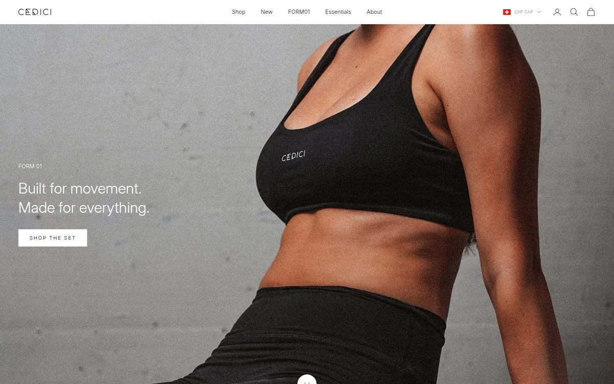

CEDICI
Eine Marke wird erst dann wiedererkennbar, wenn Bildsprache, Produkte und Kommunikation konsequent zusammenspielen.

- Projektstatus
- Eigene Marke / Mitgründung
- Mein Beitrag
- Creative Direction & Marketing
- Bereich
- Fashion / E-Commerce
Eigene Marke und persönliche Projekterfahrung; keine externe AREKHANDIA-Agenturreferenz.
Die Aufgabe.
Eine unabhängige Modemarke braucht einen klaren Charakter – über Produktgestaltung, digitale Darstellung und Kampagnen hinweg. Bei CEDICI war diese langfristige Markenentwicklung Teil meiner Arbeit als Mitgründer und Creative Director.
Die Richtung.
Die Verbindung von minimalistischer Markenidentität, Produktinszenierung und konsistenter visueller Kommunikation stand im Zentrum. Von einzelnen Assets bis zum E-Commerce-Auftritt ging es darum, die Marke als zusammenhängendes Erlebnis darzustellen.
Was dahintersteckt.
- Visuelle Markenführung und Creative Direction
- Kampagnenideen, Produktdarstellung und Marketingmaterial
- Content-Kommunikation für Website und digitale Kanäle
- E-Commerce-Darstellung und Weiterentwicklung
Marke im Einsatz.
Auf der live zugänglichen CEDICI-Website lässt sich nachvollziehen, wie die Marke im E-Commerce präsentiert wird: vom Markenauftritt über die Produktkommunikation bis zur Darstellung der Kollektionen. Das ist ein überprüfbarer Einblick in ein eigenständiges Markenprojekt – keine Behauptung über erzielte Umsätze oder Werbeergebnisse.
Mein Beitrag lag im Rahmen der Mitgründung und Creative Direction bei Markenführung, Kampagnenkonzeption und visueller Kommunikation; nicht jede Arbeit auf der Website wurde von mir persönlich produziert.
Markenauftritt selbst ansehen